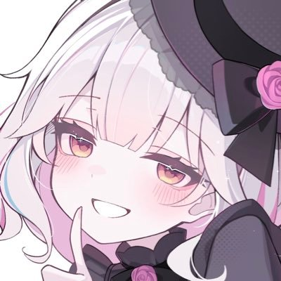
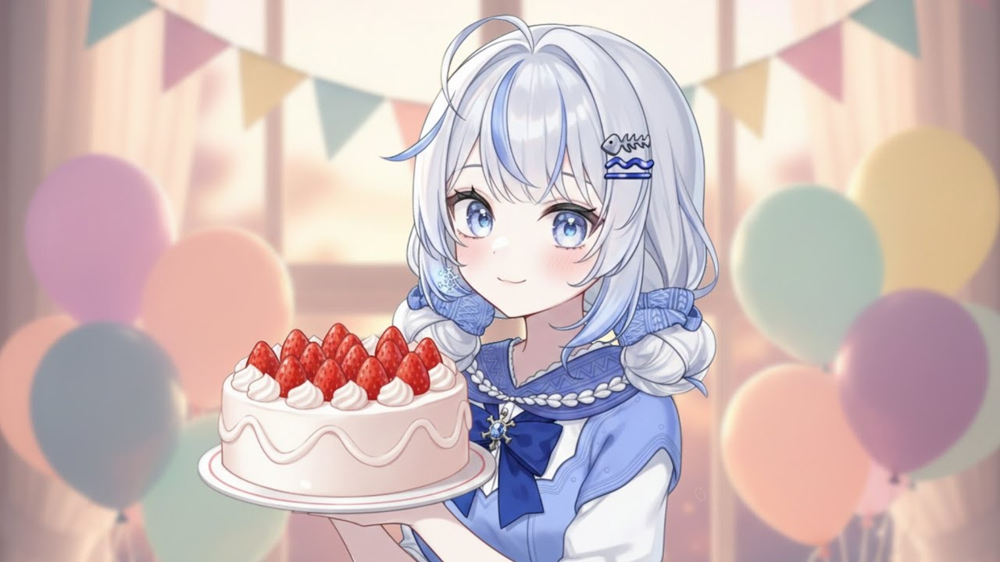

눈을 눌러 지정 · 끌면 따라옴

눈을 눌러 지정 · 끌면 따라옴

눈을 눌러 지정 · 끌면 따라옴

눈을 눌러 지정 · 끌면 따라옴

눈을 눌러 지정 · 끌면 따라옴
왼쪽 그림에서 눈을 누르면 오른쪽 행이 바로 그 결과가 된다(끌면 따라옴). 그림은 끌어다 놓거나 아래 버튼으로 바꾼다 — 원본 그대로 저장하므로 해상도가 줄지 않는다.
초점은 행의 가로세로 비율에 걸려 있어서, 폭·높이를 먼저 정하고 맞추는 편이 빠르다. 미리보기는 항상 실제 치수로 그린다.
글자 크기는 %로 조절하되 정수 px 로 반올림해 심는다 — 소수 크기는 픽셀 격자에 걸치며 흐려지고, 한글은 그 흐림이 먼저 눈에 띈다.
다 되면 Ctrl+S. 실행은 npm run dev:focus → http://localhost:5178/.

